Authors: Lena M. Hansen, Clara Henke, Christoph Hotter, Oliver A. D. Sandberg, Thomas Wilkens Sandø, Vasiliki Angelopoulou, Alexey Tiranov, Christoffer B. Møller, Zhe Liu, Leonardo Midolo, Nikolai Bart, Arne Ludwig, Philip Walther, Cornelis J. van Diepen, Peter Lodahl, Anders Søndberg Sørensen
Type: experiment · Category: quantum information and computing · PDF: https://arxiv.org/pdf/2605.18525v1
Analysis basis: full PDF text, analyzed in chunks
Topic relevance: 🔥 quantum optics experiment 5/5 · 🔥 QC/QI experiment 4/5 · 🔥 Tavis-Cummings & cavity-many-emitter 4/5 · analog quantum simulation 3/5 · correlated cavity matter 3/5 · correlated / nonlocal dissipation 2/5 · driven-dissipative phase transition 2/5 · entanglement & information structure 2/5
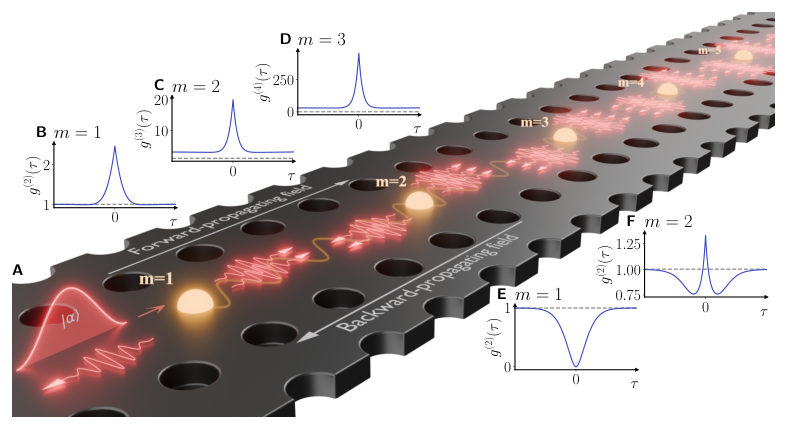
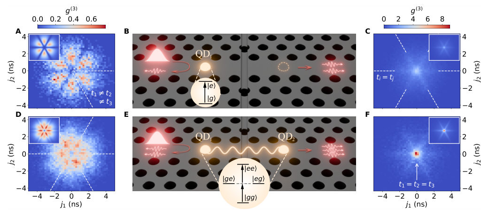
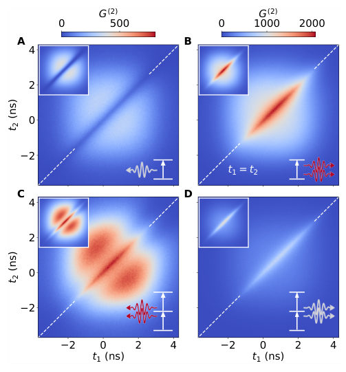
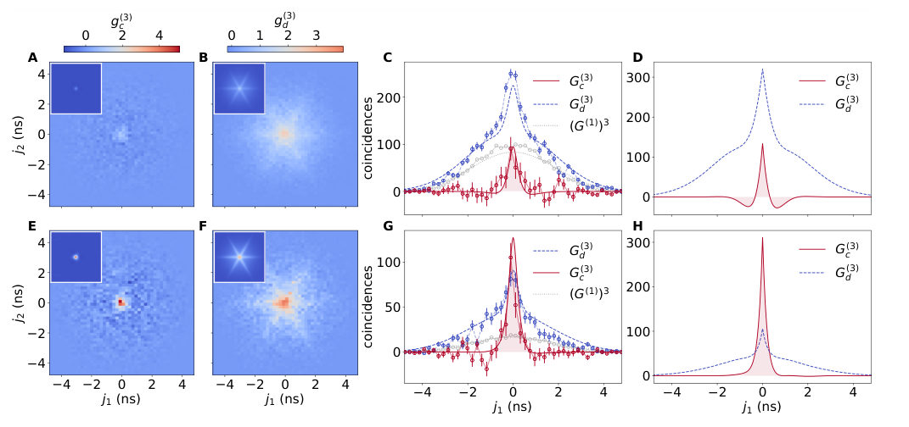
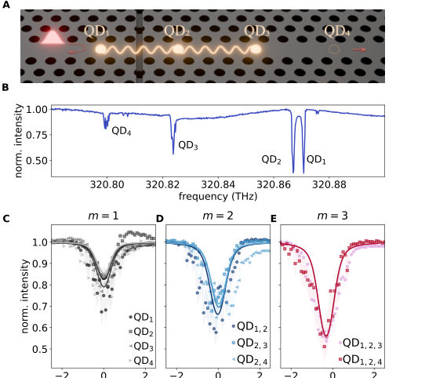
Summary. This paper demonstrates the realization of many-body quantum optics by coupling multiple quantum dots within a nanophotonic waveguide. By tuning the number of emitters, the researchers show that higher-order photon correlations can be engineered, specifically observing genuine three-photon correlations. This work provides a scalable foundation for creating many-body entangled states and quantum simulators.
Why it may be interesting. It demonstrates the experimental onset of many-body quantum optics in a waveguide-QED setting, providing a platform for quantum simulators, many-body entanglement, and exploring novel quantum phase transitions through engineered photon-photon interactions.
Main problem. Achieving deterministic, scalable control of light-matter interactions to extend quantum optics from single-photon/single-atom regimes to many-body quantum optics.
Main result. The researchers realized many-body quantum optics in a waveguide by demonstrating that adding quantum emitters generates higher-order photon correlations, specifically observing genuine three-photon correlations from a pair of coupled emitters.
Method. The experiment uses pulsed excitation of semiconductor quantum dots in a nanophotonic waveguide, measuring n-photon correlation functions via three detection channels and comparing results to theoretical simulations.
Model / system. A nanophotonic photonic crystal waveguide (PCW) coupled to multiple InAs quantum dots (QDs) in a GaAs p-i-n diode heterostructure, where emitters are independently tunable via electrical (Stark) and magnetic (Zeeman) effects.
Key observables. n-photon correlation functions (g(2), g(3), g(4)), connected (genuine) and disconnected components of third-order correlations (Gc(3), Gd(3)), and transmission/reflection spectra.
Important parameters / regimes. Coupling phase (phi = 0.8pi), decay rate (Gamma), dephuring rate (gamma_d), beta factor, and the scaling law where the nth-order joint cumulant peaks at n = m + 1.
Assumptions / limitations. The analysis assumes the impact of spectral diffusion and detector jitter can be modeled; simulations exclude blinking effects.
Figures summary. Figure 1 shows the waveguide schematic and simulations of photon correlations; Figure 2 displays experimental g(3) measurements for single and coupled QDs; Figure 4 shows connected vs. disconnected three-photon components; Figure 5 illustrates the scalability to three emitters.
Paper structure. The paper introduces the problem of many-body quantum optics, describes the experimental platform and tuning mechanisms, presents results for single and coupled emitters (including higher-order correlations), demonstrates scalability to three emitters, and concludes with a discussion on limitations and future directions.
Controlling light photon-by-photon is central to quantum optics. At a fundamental level, photon interactions are mediated by their coupling to atoms, and ultimate control requires deterministic light-matter interfacing of single photons to single atoms. Extending this paradigm to radiatively couple multiple individual atoms in a deterministic and scalable manner opens the arena of many-body quantum optics. Here, we realize such a setting by coherently coupling solid-state artificial atoms to a nanophotonic waveguide and demonstrate higher-order photon correlations that are controlled by the number of quantum emitters. We study the scaling of nonlinear photonic transport induced by emitter-photon scattering and demonstrate that adding a quantum emitter generates higher-order photon correlations. Specifically, we experimentally observe genuine three-photon correlations from a pair of collectively coupled emitters, while contributions from lower photon numbers are suppressed. In addition, we scale to three resonant quantum emitters coupled to the waveguide. These advancements demonstrate the onset of many-body quantum optics in waveguide quantum electrodynamics, enabling new photonic quantum simulators, the creation of many-body entangled states, and the exploration of novel quantum phase transitions.
Authors: Radhika Prasad, Nilakshi Senapati, Abhinandan Bhattacharjee, Suman Karan, Anand K. Jha
Type: experiment · Category: quantum information and computing · PDF: https://arxiv.org/pdf/2605.17974v1
Analysis basis: full PDF text, analyzed in chunks
Topic relevance: 🔥 quantum optics experiment 5/5 · 🔥 QC/QI experiment 4/5 · entanglement & information structure 3/5 · interference shaping light 3/5 · quantum measurements 3/5
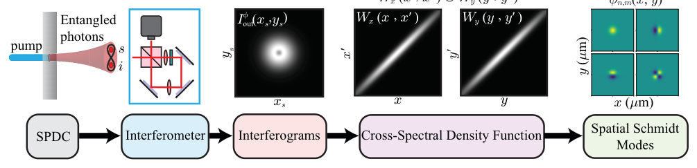
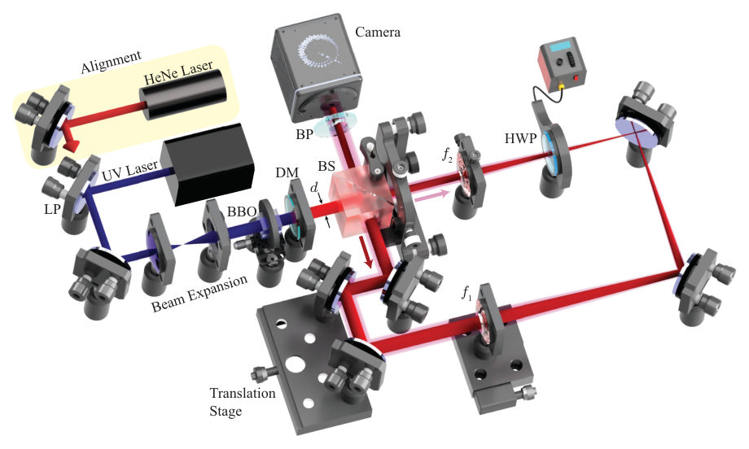
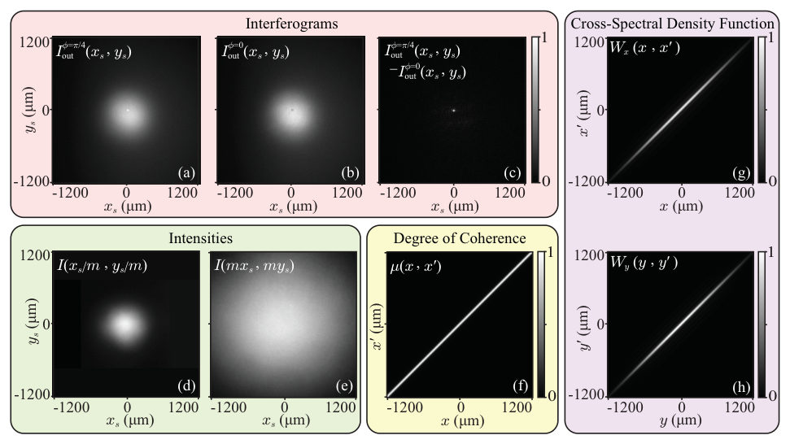
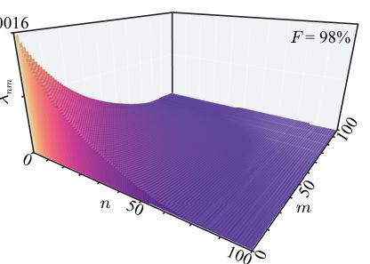
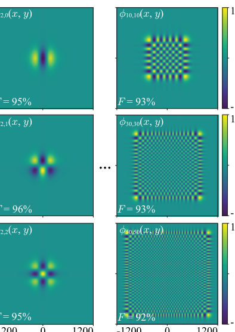
Summary. The researchers have demonstrated a new way to identify the spatial patterns (Schmidt modes) of entangled photon pairs without knowing them beforehand. By measuring the coherence of a single photon, they successfully mapped out over 3000 modes with high accuracy. This breakthrough enables much easier use of high-dimensional light for complex quantum communication and computing tasks.
Why it may be interesting. This work is highly relevant to quantum optics and photonic quantum information as it provides a way to characterize and potentially manipulate extremely high-dimensional qudits without needing prior knowledge of their spatial structure.
Main problem. Existing techniques for characterizing high-dimensional entangled two-photon states can only reconstruct the Schmidt spectrum if the Schmidt basis is known a priori, and often suffer from low efficiency or long data collection times.
Main result. The authors developed a technique to measure the complete set of spatial Schmidt modes without prior knowledge, achieving measurement of states with over 3000 Schmidt modes with up to 98% fidelity.
Method. The method uses a Sagnac-type interferometer with a 4f lens configuration to measure the cross-spectral density function (CSDF) of a single photon, which is then numerically diagonalized to extract the Schmidt modes and spectrum.
Model / system. The system consists of high-dimensional entangled two-photon states generated via type-I, collinear, degenerate Spontaneous Parampectrum Down-Conversion (SPDC) using a UV laser and a BBO crystal.
Key observables. Detection probability, cross-spectral density function (CSDF), degree of spatial coherence, Schmidt spectrum (eigenvalues), and Schmidt modes (eigenfunctions).
Important parameters / regimes. Pump beam waist (507 um), crystal thickness (1 mm), magnification factor (m=2 and 1/2), and Schmidt number (approx. 3413).
Assumptions / limitations. The signal photon field is assumed to be quasi-homogeneous, meaning the degree of coherence depends only on the difference in coordinates.
Figures summary. Figure 1 illustrates the conceptual measurement process; Figure 2 shows the experimental setup; Figure 3 displays recorded interferograms and reconstructed coherence/CSDF; Figure 4 shows the reconstructed Schmidt spectrum; Figure 5 displays reconstructed spatial Schmidt modes up to order 50.
Paper structure. The paper introduces the problem of basis-dependent measurement, describes the experimental setup and interferometer-based reconstruction method, presents the results for high-dimensional mode measurement and fidelity, and discusses limitations related to camera resolution.
Spontaneous parametric down-conversion (SPDC) is the most widely-used source of high-dimensional entangled two-photon states, and the entanglement in the spatial degree of freedom is considered best suited for harnessing high-dimensional advantages. Although the Schmidt basis provides a natural choice for state characterisation of entangled two-photon states in any degree of freedom, there is currently no technique that can measure the Schmidt basis of an entangled two-photon field. The existing techniques can only reconstruct the Schmidt spectrum when the Schmidt basis is known a priori. In contrast, we present a technique that measures the complete set of spatial Schmidt modes without any prior knowledge. Using this technique, we report measurement of states with over 3000 Schmidt modes -- highest reported yet -- with up to 98$\%$ fidelity. We expect our work to significantly advance the harnessing of high-dimensional advantages in SPDC-based systems.
Authors: Han-Ze Li, Jian-Xin Zhong
Type: theory · Category: quantum information and computing · PDF: https://arxiv.org/pdf/2605.18622v1
Analysis basis: full PDF text, analyzed in chunks
Topic relevance: 🔥 scars & prethermalization 5/5 · 🔥 non-equilibrium dynamics 4/5 · entanglement & information structure 3/5
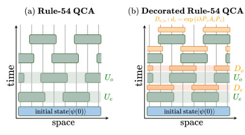
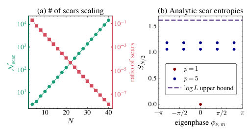
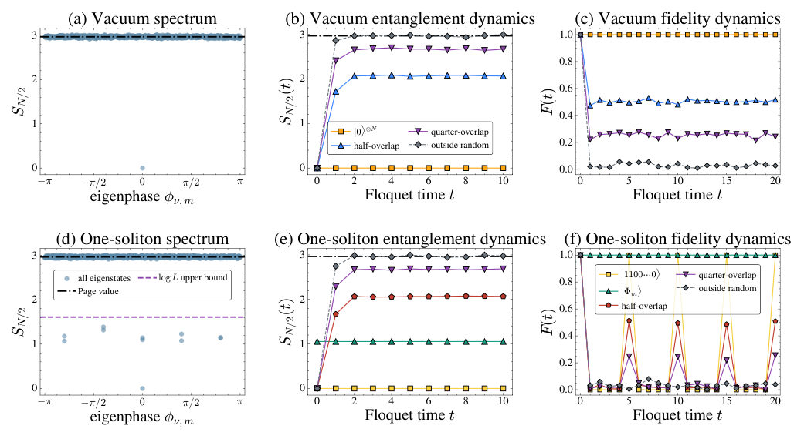
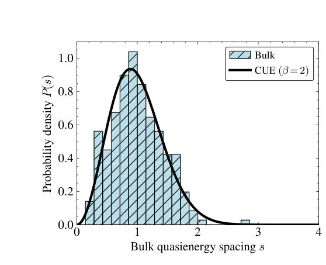
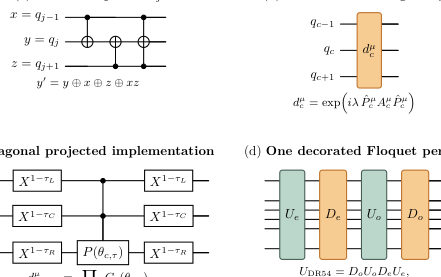
Summary. The paper presents a method to engineer exact many-body scars in a quantum cellular automaton by decorating the Rule-54 rule with local projectors. It proves that this construction creates a system where a sparse, non-thermal sector of solitons coexists with a thermalizing background, providing a platform for studying weak ergodicity breaking and digital quantum simulation.
Why it may be interesting. This work is highly relevant for many-body dynamics and quantum computing as it provides a blueprint for digital quantum simulations of non-ergodic dynamics and explores the controlled coexistence of thermal and non-thermal phases.
Main problem. The paper investigates the engineering of exact quantum many-body scars (QMBS) within a quantum cellular automaton (QCA) framework, specifically addressing how non-thermal eigenstates can coexist with a thermalizing many-body spectrum.
Main result. The authors demonstrate a method to engineer exact Floquet scars using the intrinsic soliton structure of the Rule-54 QCA, where the number of scars grows with Fibonacci combinatorics while their fraction in the Hilbert space vanishes exponentially.
Method. The study uses analytical construction via orbit-Fourier modes, transfer matrix methods for combinatorics, and exact diagonalization (ED) for numerical verification of entanglement and spectral statistics.
Model / system. A decorated Rule-54 quantum cellular automaton consisting of a 1D chain of qubits with periodic boundary conditions, where local 'decorations' are added to the Rule-54 dynamics to create a thermalizing background while leaving a protected soliton sector invariant.
Key observables. Entanglement entropy (von Neumann and Renyi), fidelity decay, return probability, spectral statistics (CUE), and protected-sector weight.
Important parameters / regimes. System size N (or L), Fibonacci-scaled dimension of the scar sector, and the scaling of the scar fraction relative to the total Hilbert space.
Assumptions / limitations. The construction assumes exact projector-controlled decorations that are identity operators on the protected trajectory; generic perturbations may induce leakage from the scar sector.
Figures summary. Figure 1 shows the architecture of bare and decorated Rule-54 QCA; Figure 2 illustrates the scaling of scars and entanglement; Figure 3 displays numerical signatures like entanglement growth and fidelity for vacuum and soliton states; Figure 5 details the digital circuit implementation.
Paper structure. The paper introduces the problem of engineering scars, defines the Rule-54 QCA and the decoration method, provides analytical proofs for the existence and entanglement bounds of the scars, presents numerical simulations of the dual dynamics, and concludes with a digital circuit implementation strategy.
Quantum many-body scars provide a controlled form of weak ergodicity breaking, in which structured nonthermal eigenstates coexist with a thermalizing many-body spectrum. We introduce a qubit-level route to exact scars based on the intrinsic soliton structure of the Rule-54 quantum cellular automaton. A hard-core dimer sector of Rule 54 supplies an exactly translatable protected skeleton, while local projector-controlled decorations are invisible on this skeleton and nontrivial outside it. The protected dynamics is therefore reducible to finite translation orbits, whose Fourier modes form exact Floquet eigenstates with sub-volume-law entanglement. The number of exact scars grows with Fibonacci combinatorics, whereas their fraction in the full qubit Hilbert space remains exponentially small. Finite-size simulations show Page-like eigenstate entanglement, rapid entanglement growth, fidelity decay, and circular unitary ensemble quasienergy statistics in the decorated complement. This construction demonstrates that exact many-body scars can be engineered from native finite-orbit structures of an interacting reversible automaton, and provides a direct starting point for digital quantum simulation of scarred cellular-automaton dynamics.
Authors: Anshuman Nayak, Daehee Kim, Shilu Tian, Jason Twamley
Type: experiment · Category: other · PDF: https://arxiv.org/pdf/2605.17750v1
Analysis basis: full PDF text, analyzed in chunks
Topic relevance: 🔥 spintronics-quantum-optics interface 5/5 · QC/QI experiment 3/5 · quantum measurements 2/5 · quantum optics experiment 2/5
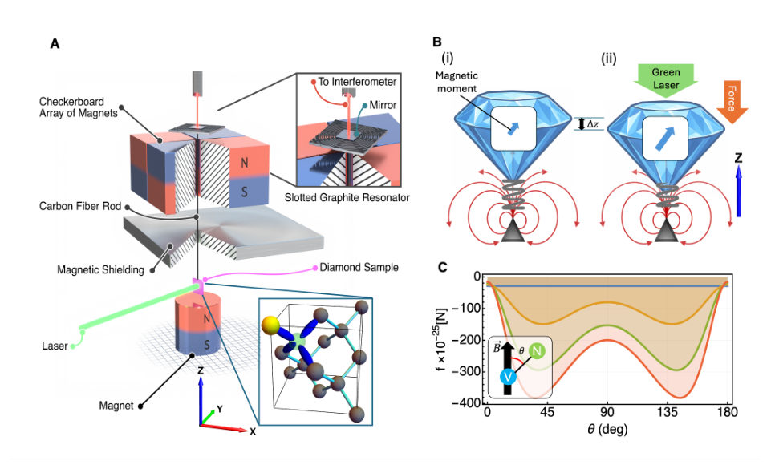
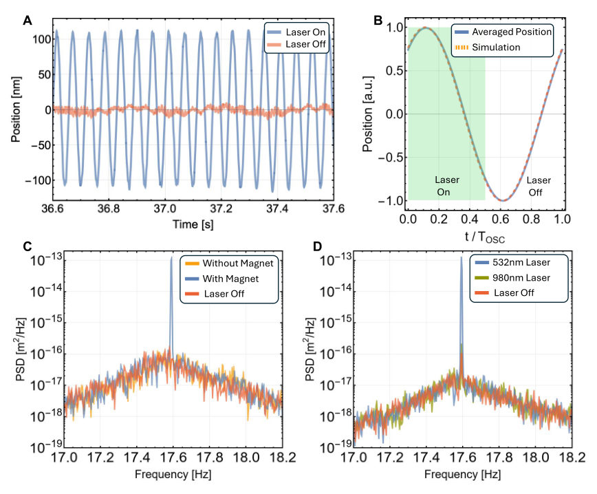
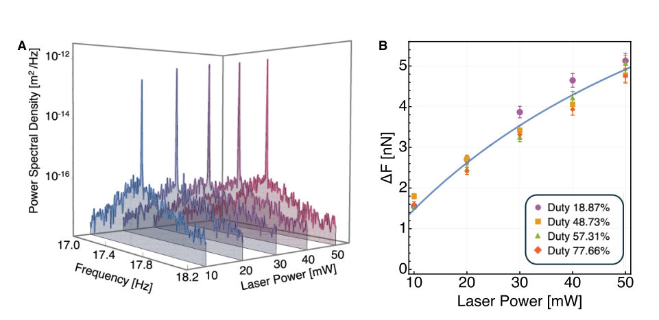
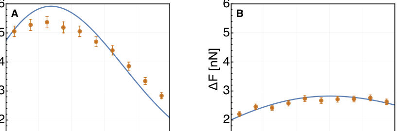
Summary. The researchers successfully drove a 100 mg levitated mechanical oscillator using the magnetic force generated by an ensemble of NV centers in diamond. By periodically polarizing the spins with a laser, they achieved large, phase-coherent mechanical oscillations. This achievement marks a significant step toward using spin-based engineering to control motion in the high-mass regime.
Why it may be interesting. This work demonstrates a bridge between spin dynamics and macroscopic mechanics, relevant to researchers in quantum optics and open quantum systems interested in hybrid quantum systems and the interface of quantum mechanics and gravity.
Main problem. The difficulty of experimentally observing the spin-dependent force (spin-force) in mechanical systems larger than the atomic scale.
Main result. Demonstration of controllable center-of-mass motion in a 128 mg diamagnetically levitated resonator driven by the spin-force from an ensemble of Nitrogen-Vacancy (NV) defects.
Method. Periodic optical initialization of NV spin states using a 532 nm laser is used to switch the ensemble between thermal and polarized states, creating a periodic force at the mechanical resonance frequency.
Model / system. A hybrid system consisting of a 128 mg diamagnetically levitated graphite/diamond oscillator and an ensemble of NV centers in diamond, placed in a strong magnetic field gradient provided by permanent magnets.
Key observables. Center-of-mass (COM) oscillation amplitude, Power Spectral Density (PSD) of the resonator motion, and phase coherence of the oscillation.
Important parameters / regimes. Mass scale of 100-128 mg, resonance frequency of 17.6 Hz, magnetic field gradient of ~98 T/m, and motional amplitudes up to 1.5 micrometers in vacuum.
Assumptions / limitations. Assumes the polarization time and T1 relaxation time are much shorter than the mechanical oscillation period.
Figures summary. Figure 1 shows the experimental schematic and the mechanism of the spin-force; Figure 2 displays the time trace, averaged waveform, and PSD showing the resonance peak; Figure 3 shows the waterfall plot of PSD with increasing laser power.
Paper structure. The paper introduces the scientific problem of macroscopic spin-force detection, describes the experimental setup of the levitated diamond/graphite resonator, details the optical driving and spin-modeling methods, presents results demonstrating phase-coherent motion and verification of the spin-origin, and discusses future scaling potential.
The force experienced by a spin in a magnetic field gradient underlies many proposals for hybrid quantum systems. These include schemes for mechanically mediated quantum gates, spin squeezing, searches for exotic forces, and motional superpositions for probing the interface between quantum and gravity. Yet, experimentally observing this spin-force for anything larger than atomic scales has proved challenging. In our work, we demonstrate controllable Center-of-Mass motion of a $128 \rm\: mg$ diamagnetically levitated oscillator due to force from an ensemble of Nitrogen-Vacancy (NV) defects in diamond. We induce coherent motion in the oscillator by periodic optical initialisation of the NV spin states, achieving motional amplitudes exceeding $100 \rm\:nm$. Our results mark a key milestone towards spin-based engineering of motional states deep in the high-mass regime.
Authors: Chenrong Liu
Type: theory · Category: quantum gases · PDF: https://arxiv.org/pdf/2605.18119v1
Analysis basis: full PDF text, analyzed in chunks
Topic relevance: 🔥 scars & prethermalization 5/5 · 🔥 non-equilibrium dynamics 4/5 · entanglement & information structure 3/5
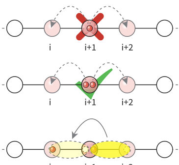
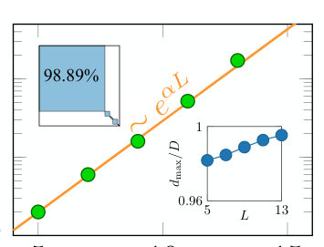
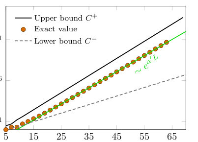
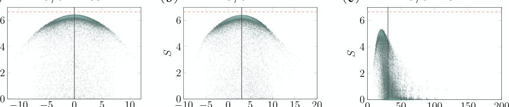
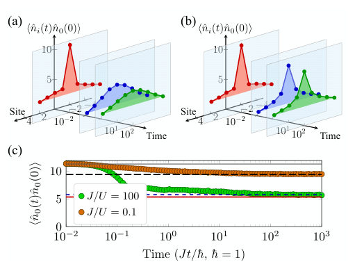
Summary. This paper demonstrates that a 1D Bose-Hubbard chain with dipole conservation undergoes weak Hilbert-space fragmentation. It shows that despite the presence of many small disconnected sectors, a large dominant sector allows for a transition from a nonergodic regime to a thermalizing, chaotic regime as interaction strength decreases.
Why it may be interesting. It provides a minimal platform to study the interplay between kinetic constraints (dipole conservation), fragmentation, and the breakdown of ergodicity, which is central to understanding many-body dynamics and thermalization.
Main problem. The study investigates how Hilbert-space fragmentation, caused by dipole conservation, affects the transition between thermalizing (ETH) and nonergodic regimes in a 1D Bose-Hubbard chain.
Main result. The system exhibits weak Hilbert-space fragmentation where a single dominant Krylov sector coexists with many small ones, and this weak fragmentation does not prevent the emergence of quantum chaos or thermalization at large J/U.
Method. The author uses Exact Diagonalization (ED), graph theory to identify Krylov sectors, and dynamic programming to count frozen states, alongside statistical analyses of level spacing and entanglement entropy.
Model / system. A one-dimensional dipole-conserving Bose-Hublamd chain with open boundary conditions, featuring a three-site hopping term that conserves both total particle number and total dipole moment.
Key observables. Half-chain entanglement entropy, level spacing ratio statistics (r-parameter), density relaxation dynamics (autocorrelation function), and density of states (DOS).
Important parameters / regimes. The ratio of hopping amplitude to on-site interaction strength (J/U), system size (L), and the particle number/dipole moment sector (N=2L, P=0).
Assumptions / limitations. The transition between thermal and nonergodic regimes is treated as a crossover/transition that may be difficult to distinguish as a sharp phase transition due to finite-size limitations.
Figures summary. Figure 2 shows the block-diagonal Hamiltonian structure; Figure 3 compares frozen state counts to analytical bounds; Figure 4 plots entanglement entropy vs. energy density; Figure 7 shows the decay of the autocorrelator difference; Figure 8 shows level spacing distributions; Figure 10 displays the evolution of the density of states across different J/U regimes.
Paper structure. The paper introduces the dipole-conserving model, analyzes the structure of the Hilbert space (fragmentation and frozen states), examines the thermalization transition via entanglement and dynamics, investigates spectral statistics (chaos vs. Poisson), and concludes with the evolution of the density of states.
We study Hilbert-space fragmentation and thermalization in a one-dimensional dipole-conserving Bose-Hubbard chain. By analyzing the structure of the Hamiltonian matrix in the Fock basis, we show that the system exhibits weak Hilbert-space fragmentation. We further construct an exponentially large family of frozen product states and derive analytical upper and lower bounds on their number. Using exact diagonalization, we examine the consequences of weak fragmentation for eigenstate half-chain entanglement, density relaxation dynamics, and level statistics. All these quantities reveal a transition from a weak eigenstate thermalization regime to a nonergodic regime with increasing on-site interaction strength. These results show that weak Hilbert-space fragmentation \textit{does not} preclude quantum chaos or thermalization, and provides a minimal platform for studying the interplay of dipole conservation, weak fragmentation, and ergodicity breaking.
Authors: A. Rutkowski, M. Mierzejewski, J. Herbrych
Type: theory · Category: strongly correlated electrons · PDF: https://arxiv.org/pdf/2605.17951v1
Analysis basis: full PDF text, analyzed in chunks
Topic relevance: 🔥 scars & prethermalization 5/5 · non-equilibrium dynamics 3/5 · entanglement & information structure 2/5
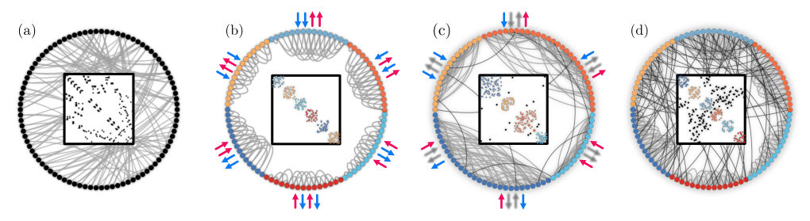
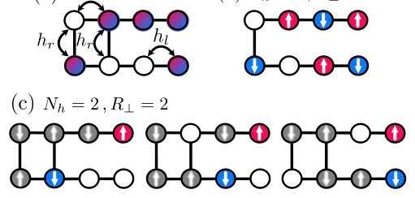
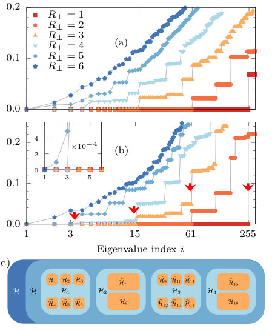
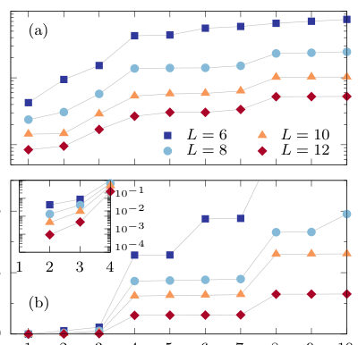
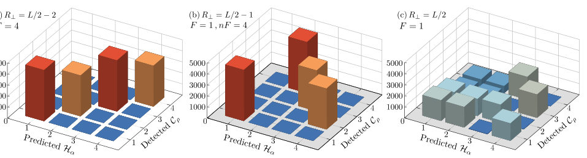
Summary. This paper introduces a graph-theoretic framework to detect Hilbert space fragmentation and nearly fragmented regimes in quantum many-body systems. By treating the Hamiltonian as an adjacency matrix, the authors use spectral graph theory to identify disconnected or weakly coupled sectors. The method is shown to be physically accurate, as the identified graph communities correspond to real dynamical timescales in the t-J and Hubbard models.
Why it may be interesting. This is highly relevant for many-body dynamics as it provides a general, scalable tool to diagnose ergodicity breaking and prethermal-like hierarchical timescales in complex quantum systems.
Main problem. Developing an unbiased method to detect Hilbert space fragmentation and 'nearly fragmented' regimes in quantum many-body systems without requiring prior knowledge of specific conservation laws.
Main result. The authors demonstrate that spectral graph theory (using Laplacian and modularity matrices) can reliably identify both exact and approximate fragmentation, capturing the hierarchical dynamical timescales in the t-J and Hubbard models.
Method. The many-body Hilbert space is mapped onto a graph where basis states are vertices and Hamiltonian matrix elements are edges, then analyzed using the Laplacian spectrum, Fiedler vectors, and modularity maximization.
Model / system. The study focuses on the one-dimensional t-J model (including t-Jz and t-models) and the Hubbard chain, specifically examining regimes near half-filling with varying hole concentrations.
Key observables. Laplacian and modularity eigenvalues, Fiedler vectors, modularity (Q), and the subspace-projected Loschmidt echo (D(tau)).
Important parameters / regimes. Spin exchange strength (J/t), number of holes (Nh), system size (L), and the number of rungs in ladder geometries.
Assumptions / limitations. The approach assumes the ability to represent the Hamiltonian in a chosen basis to construct the graph and focuses on the ability to compute matrix elements.
Figures summary. Figures illustrate the Laplacian and modularity spectra for different J strengths, the identification of subspaces via eigenvectors, and the time evolution of the projected Loschmidt echo to verify dynamical consistency.
Paper structure. The paper defines the models (Sec II), introduces graph-theoretic tools (Sec III), applies the framework to t-J-like models (Sec IV-V), extends the analysis to the Hubbard chain (Sec VI), and provides mathematical proofs in the Appendices.
Hilbert-space fragmentation provides a mechanism for ergodicity breaking in quantum many-body systems even in the absence of disorder, leading to dynamically disconnected sectors and strong memory of initial conditions. However, identifying such structures is often challenging and typically relies on prior knowledge of conservation laws or model-specific analytical insight. Here we introduce an unbiased approach based on spectral graph theory and, within this framework, formulate the concept of nearly fragmented systems, in which perturbative processes couple otherwise fragmented sectors while preserving their dynamical imprint. By representing basis states as vertices and Hamiltonian matrix elements as edges, we map the connectivity structure of the many-body Hilbert space onto a graph and analyze it using tools such as the Laplacian spectrum, Fiedler vectors, and modularity. Exact fragmentation corresponds to disconnected graph components, while nearly fragmented systems manifest as weakly connected communities whose structure can still be resolved spectrally. Applying this framework to the one-dimensional $t$-$J$ model and its perturbations, we demonstrate that graph-theoretic diagnostics reliably identify both fragmented and nearly fragmented Hilbert-space structures and capture the hierarchy of dynamical time scales that governs the system's evolution. We further show that the method extends beyond kinetically constrained models by applying it directly to the Hubbard chain, where it reveals the emergence of nearly decoupled subspaces associated with doublon dynamics and spin configurations. Our results establish the spectral graph analysis as a general and scalable tool for diagnosing fragmentation and approximate dynamical constraints in complex quantum many-body systems.
Authors: Luis C. Steinfadt, André Eckardt, Francesco Petiziol
Type: theory · Category: other · PDF: https://arxiv.org/pdf/2605.18377v1
Analysis basis: full PDF text, analyzed in chunks
Topic relevance: 🔥 correlated / nonlocal dissipation 4/5 · 🔥 correlated cavity matter 4/5 · 🔥 non-equilibrium dynamics 4/5 · analog quantum simulation 3/5 · driven-dissipative phase transition 3/5 · exotic spin models in light-matter 3/5 · Tavis-Cummings & cavity-many-emitter 2/5 · methods for driven-dissipative 2/5 · quantum measurements 2/5
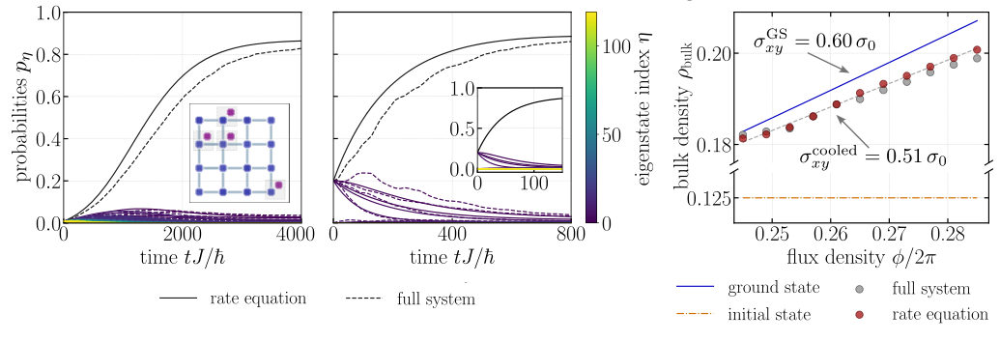
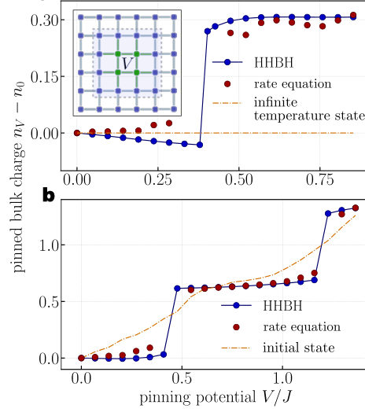
Summary. This paper proposes a method to prepare fractional Chern insulator states in superconducting circuits by using engineered dissipation to drive the system into a target ground state. By coupling a Floquet-engineered lattice to leaky cavities, the researchers show that the Laughlin-like state can be stabilized and its topological signatures, such as fractional charge pinning, can be detected.
Why it may be interesting. It provides a concrete pathway for using reservoir engineering and dissipation to prepare non-equilibrium topological states, bridging the gap between open quantum systems and many-body physics.
Main problem. The difficulty of preparing and stabilizing highly correlated Fractional Chern Insulator (FCI) states, such as the Laughlin state, using traditional adiabatic protocols due to phase transition gaps and excitations.
Main result. The authors demonstrate a protocol for the autonomous, dissipation-assisted stabilization of Floquet-Laughlin states in superconducting circuits, achieving ground-state fidelities above 85% and observing signatures like Hall response and fractional charge pinning.
Method. Quantum bath engineering using driven-dissipative coupling to leaky cavity modes, modeled via Lindblad master equations, Pauli rate equations, and numerical techniques like DMRG and quantum trajectories.
Model / system. A Floquet-engineered Harper-Hofstadter-Bose-Hubbard model of hard-core bosons implemented in superconducting circuits (circuit QED), where lattice sites are coupled to driven, leaky microwave resonators.
Key observables. Ground-state fidelity, Hall conductivity (Streda formula), bulk incompressibility, and the pinning of fractional charges.
Important parameters / regimes. High-frequency Floquet regime (hbar omega >> J), bad-cavity regime, dispersive atom-cavity coupling, cavity detunings, and decay rates.
Assumptions / limitations. Neglects transmon dephasing and spontaneous decay; assumes the resonator decay is the dominant dissipative rate; assumes the validity of the dispersive approximation by avoiding accidental resonances.
Figures summary. Figure 1 shows stabilization fidelity over time and Hall conductivity for a two-particle system; Figure 2 illustrates bulk charge response to local potential dips and the effects of varying cavity coupling and detuning.
Paper structure. The paper introduces the challenge of FCI preparation, defines the Floquet-engineered superconducting platform, derives the effective dissipative dynamics via perturbation theory, presents numerical results for various particle numbers (N=2, 3, 6), and concludes with the robustness of the scheme.
Fractional Chern insulators (FCIs) are lattice analogs of fractional quantum Hall systems, where the interplay of strong interactions with a frustrated tunnelling kinetics leads to the emergence of a gapped ground state with long-range entanglement and anyonic excitations. The highly correlated nature of such systems makes their adiabatic preparation challenging already beyond the minimal system size of two particles. Considering Floquet implementations of the bosonic Harper-Hofstadter-Hubbard model of few photons in superconducting circuits, we design protocols for the driven-dissipative stabilization of its FCI ground state at half filling via quantum bath engineering. Dissipation control is achieved through the coupling to driven leaky cavity modes, which realize a tuneable artificial environment having the Floquet-FCI as its approximate fixed point. For systems of two, three and six particles, we show numerically how the flexibility of the control scheme further allows for the detection of fractional quantum Hall signatures in the stabilized steady states, including bulk incompressibility, Hall response and the trapping of fractional charges. Our results provide a concrete pathway to dissipation-assisted preparation of strongly correlated states in quantum simulators.
Authors: Ruben Daraban, Arghavan Safavi-Naini, Johannes Schachenmayer, Mohammad Maghrebi
Type: theory · Category: statistical mechanics · PDF: https://arxiv.org/pdf/2605.16494v1
Analysis basis: full PDF text, analyzed in chunks
Topic relevance: 🔥 non-equilibrium dynamics 4/5 · 🔥 non-equilibrium universality 4/5 · Dicke superradiance 3/5 · driven-dissipative phase transition 3/5 · entanglement & information structure 3/5 · methods for driven-dissipative 3/5 · free-space correlated emission 2/5 · scars & prethermalization 2/5
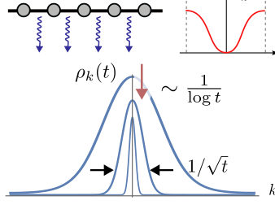
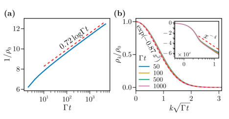
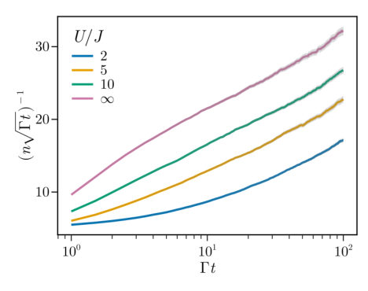
Summary. This paper demonstrates that a single-particle dark state in a dissipative spin chain induces universal many-body dynamics characterized by logarithmic decay and specific scaling laws. By analyzing the nonlinear coupling between modes, the authors explain how the previously stable dark state eventually decays. The results are shown to be universal across both hard-core and soft-core bosonic models.
Why it may be interesting. It provides a resolution to conflicting literature on dissipative spin chains and reveals how a single-particle symmetry-protected state can drive universal many-body dynamics through nonlinear dressing.
Main problem. Understanding the many-body dynamics of open quantum systems hosting dark or subradiant states and resolving conflicting reports regarding their long-time decay and critical exponents.
Main result. The study identifies a universal long-time decay of the total density as 1/(sqrt(t) log t) and a logarithmic decay of the single-particle dark state due to dissipation-induced nonlinearity, with a momentum distribution following a universal scaling form in k*sqrt(t).
Method. The authors use a combination of Jordan-Wigner transformation, a time-dependent Generalized Gibbs Ensemble (GGE) ansatz, analytic continuation in the complex plane, and Matrix Product State (MPS) simulations.
Model / system. An open XX spin chain (or hard/soft-core bosons) subject to correlated dissipation on neighboring sites, described by a Lindblad master equation with Lindblad operators L_j = sigma_{j+1}^- - sigma_j^-.
Key observables. Momentum distribution (rho_k and n_k), total density (n), zero-momentum mode decay (rho_0), and entanglement entropy.
Important parameters / regimes. Dissipation rate (Gamma), hopping (J), interaction strength (U), weak dissipation limit (Gamma << J), and long-time/scaling regime.
Assumptions / limitations. Weak dissipation limit (dissipation timescale much longer than Hamiltonian timescale), thermodynamic limit (L -> infinity), and the use of a GGE ansatz for integrable systems.
Figures summary. The figures include a schematic of the spin chain, plots showing the crossover from 1/t to 1/log(t) decay in the zero-mode, scaling collapse of the momentum distribution, and verification of the algebraic tail and entanglement dynamics via MPS simulations.
Paper structure. The paper introduces the problem of dark states in many-body systems, derives the nonlinear kinetic equations using a GGE approach and analytic continuation, presents the universal scaling laws for density and momentum, and concludes with numerical verification using MPS for both spin and bosonic models.
Open quantum systems can host dark or subradiant states whose decay is highly suppressed. While these states have been extensively studied in the few-excitation regime, their impact on the many-body dynamics remains largely unexplored. Here, we study a spin chain subject to correlated dissipation on neighboring sites, which admits a single-particle dark state at zero momentum. We show that the single-particle dark state qualitatively alters the many-body dynamics at long times, and identify its distinct universal behavior. While the zero-momentum mode is dark at the single-particle level, it decays slowly as $1/\log t$ as it becomes dressed by other modes through a dissipation-induced nonlinearity. We demonstrate that the momentum distribution takes a universal scaling form in $k\sqrt{t}$, and the total density decays as $1/\sqrt{t}\log t$. Our results further elucidate the origin of the conflicting results in recent works. Finally, we corroborate the analytics with matrix product state simulations and show that the same universal behavior persists for soft-core interactions, underscoring the universality of the emergent dynamics.
Authors: Jesse J. Slim, Ewold Verhagen
Type: experiment · Category: other · PDF: https://arxiv.org/pdf/2605.18289v1
Analysis basis: full PDF text, analyzed in chunks
Topic relevance: 🔥 quantum optics experiment 4/5 · analog quantum simulation 3/5 · correlated cavity matter 3/5 · Tavis-Cummings & cavity-many-emitter 2/5 · correlated / nonlocal dissipation 2/5 · driven-dissipative phase transition 2/5 · exotic spin models in light-matter 2/5 · non-equilibrium dynamics 2/5 · quantum measurements 2/5
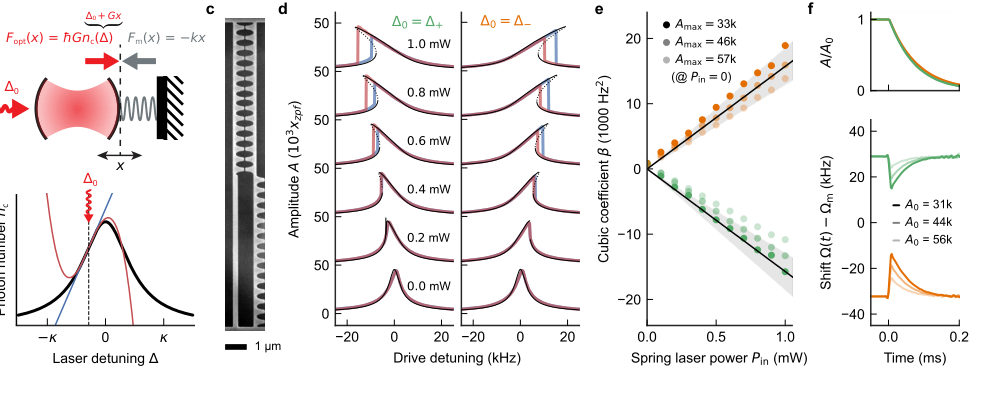
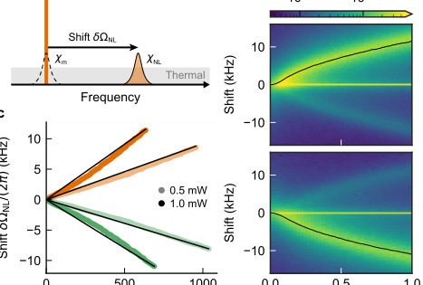
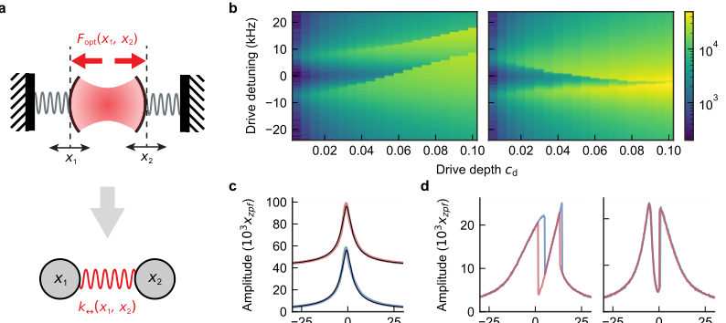
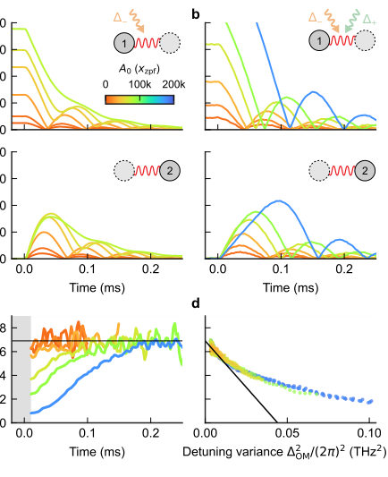
Summary. This paper demonstrates a method to create strong, tunable Duffing nonlinearity in nanomechanical resonators using light-induced optical spring effects. By controlling laser detuning and power, the researchers can manipulate the sign and magnitude of the nonlinearity and even induce nonlinear interactions between different mechanical modes. This provides a versatile platform for engineering complex nonlinear dynamics in mechanical networks.
Why it may be interesting. The ability to engineer arbitrary nonlinear Hamiltonians and reconfigurable nonlinear networks via optical backaction is highly relevant for simulating complex many-body dynamics and designing nonlinear quantum-optical circuits.
Main problem. The lack of strong, in-situ tunable mechanical nonlinearity and controllable interactions in nanomechanical resonators for applications in sensing and computing.
Main result. Demonstrated that cavity optomechanical backaction can induce a strong, tunable Duffing nonlinearity and effective nonlinear interactions between mechanical modes, with nonlinearity strength 50 times larger than intrinsic geometric effects.
Method. Experimental implementation using a silicon nanobeam photonic crystal cavity, utilizing 'spring' lasers to control nonlinearity via detuning and power, and 'force' lasers for driving.
Model / system. A dispersive, cavity optomechanical system consisting of a suspended silicon nanobeam with a mechanical resonance of 17.6 MHz coupled to a telecom optical mode in a photonic crystal cavity.
Key observables. Mechanical frequency shifts, cubic nonlinearity coefficient (beta), mechanical bistability, hysteresis, and time-resolved Rabi oscillations.
Important parameters / regimes. Fast-cavity limit (kappa >> Omega_m), optomechanical coupling g0/2pi = 3.5 MHz, and detunings u0 = +/- 1/sqrt(3) to isolate cubic terms.
Assumptions / limitations. Fast-cavity (unresolved-sideband) limit, adiabatic elimination of photon dynamics, and neglecting higher-order terms (n > 3) in the Taylor expansion.
Figures summary. Schematic of the optomechanical system, illustration of the nonlinear optical spring effect, SEM image of the nanobeam, and frequency traces of mechanical oscillations.
Paper structure. Introduction to nonlinearity needs, description of the optomechanical platform, theoretical derivation of the induced Duffing nonlinearity, experimental demonstration of tunable nonlinearity and bistability, demonstration of induced inter-mode interactions, and analysis of temporal dynamics.
Nonlinearity is a key resource in both classical and quantum signal processing. Nonlinear nanomechanical elements have found applications ranging from sensing to computing, while networks of nonlinear resonators, as well as nonlinearly coupled networks of linear resonators, constitute promising platforms for simulating complex dynamics. Here, we experimentally demonstrate an approach to realizing strong mechanical nonlinearity in nanomechanical resonators, fully controlled through optical laser drives. The mechanism exploits the nonlinearity of the radiation-pressure interaction in a cavity optomechanical system, which gives rise to a nonlinear optical spring effect. The resulting Duffing nonlinearity is conveniently tunable in strength via pump laser power, while its sign is controlled by laser detuning. Moreover, we demonstrate that the nonlinear optical spring mediates effective interactions between mechanical modes coupled to a common cavity, inducing tunable nonlinear interactions between them that impact spectral response and dynamics. These results establish cavity optomechanics as a versatile and in-situ reconfigurable platform for engineering nonlinear dynamics in resonators and networks.
Authors: Ji Qi, Xiaojun Zhang, Honngwei Yu, Zhihai Wang
Type: theory · Category: quantum information and computing · PDF: https://arxiv.org/pdf/2605.17878v1
Analysis basis: full PDF text, analyzed in chunks
Topic relevance: 🔥 correlated / nonlocal dissipation 4/5 · 🔥 interference shaping light 4/5 · non-equilibrium dynamics 3/5 · Dicke superradiance 2/5 · Tavis-Cummings & cavity-many-emitter 2/5 · entanglement & information structure 2/5 · methods for driven-dissipative 2/5
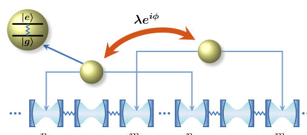
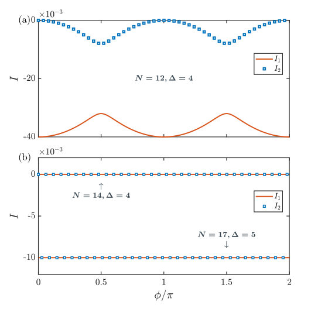
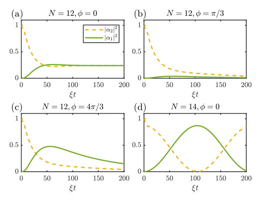
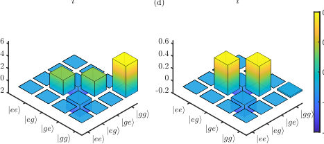
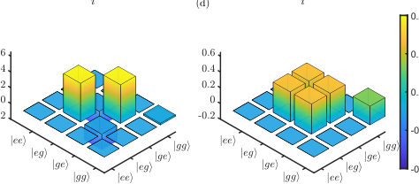
Summary. This paper explores how the phase of direct coupling between giant atoms can be used to engineer Bound States in the Continuum. By tuning this phase, one can control the number of BICs and the resulting quantum dynamics, ranging from complete decay to persistent population trapping. This offers a powerful tool for tailoring quantum-state evolution in waveguide-QED architectures.
Why it may be interesting. It provides a versatile framework for engineering dissipation-free states and controlling interference in non-local light-matter interfaces, which is highly relevant for designing quantum networks and state storage in open quantum systems.
Main problem. Investigating how the direct coupling phase between two giant atoms in a waveguide-QED setup can be used to control the formation of Bound States in the Continuum (BICs) and modulate quantum dynamics.
Main result. The study demonstrates that the coupling phase acts as a sensitive control parameter to tune the number of BICs (zero, one, or two) and their profiles, enabling tailored atomic dynamics such as population trapping, complete decay, or Rabi-like oscillations.
Method. The authors use a non-Hermitian effective matrix approach derived via the Markov approximation and Fourier transformation to analyze the eigenvalues and time-dependent atomic amplitudes.
Model / system. A two-braided-giant-atom waveguide-QED model consisting of two directly coupled two-level atoms coupled to a one-dimensional coupled-resonator waveguide (CRW) at multiple spatially separated sites.
Key observables. Imaginary parts of the system eigenvalues (to identify BICs), atomic excitation amplitudes, photonic distribution across the waveguide, and atomic entanglement (concurrence).
Important parameters / regimes. Coupling phase (phi), atomic size (N), relative separation (Delta), and photon hopping strength (xi).
Assumptions / limitations. Rotating-wave approximation (RWA), Markov approximation, and the thermodynamic limit for the resonator array.
Figures summary. Figure 3 shows time evolution of atomic populations (trapping, decay, and oscillations); Figure 4 and 5 show spatial profiles of BICs and atomic state tomography for different configurations.
Paper structure. The paper introduces the giant-atom model, presents the mathematical framework for the non-Hermitian dynamics, analyzes the dependence of BICs on the coupling phase and geometry, and concludes with the implications for quantum state engineering.
Giant atoms, which couple to a waveguide through multiple spatially separated connection points beyond the dipole approximation, provide a versatile route for quantum information processing based on interference-induced bound states in the continuum (BICs). While multi-giant-atom architectures are being developed toward giant-atom quantum networks, the role of direct coupling between the giant atoms, in particular the associated coupling phase, in atomic dynamics remains insufficiently understood. Here we take a first step toward addressing this issue by studying a two-giant-atom waveguide-QED model. We show that the coupling phase can be used to control both the number of BICs and their profiles for both of photon and atoms. More interestingly, the presence of BICs gives rise to a variety of dynamical behaviors, providing an effective mechanism for tailoring quantum-state evolution in giant-atom waveguide-QED systems. Our results highlight coupling-phase engineering as a useful tool for controlling interference, bound states, and quantum dynamics in nonlocal light--matter interfaces.
Authors: Miguel Clavero Rubio, Tomás Ramos, Diego Porras
Type: theory · Category: statistical mechanics · PDF: https://arxiv.org/pdf/2605.18394v1
Analysis basis: full PDF text, analyzed in chunks
Topic relevance: 🔥 driven-dissipative phase transition 4/5 · methods for driven-dissipative 3/5 · non-equilibrium dynamics 3/5 · non-equilibrium universality 3/5 · entanglement & information structure 2/5 · exotic spin models in light-matter 2/5
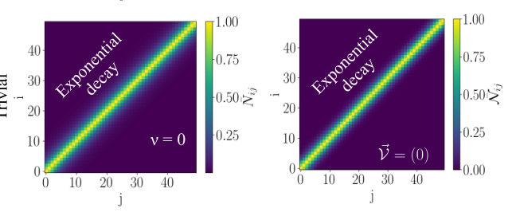
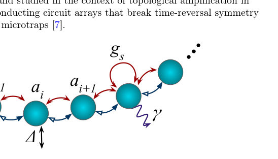
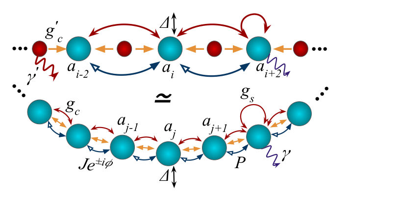
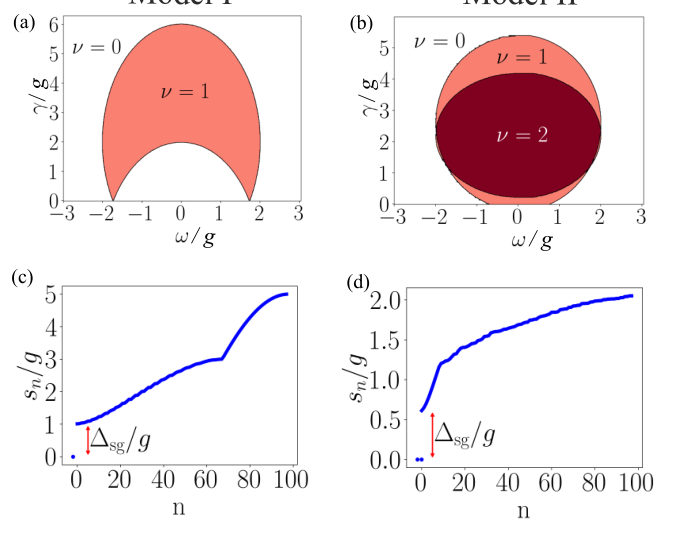
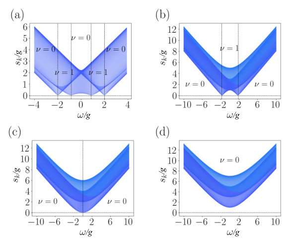
Summary. This paper reveals that the topology of driven-dissipative bosonic chains is directly imprinted on their steady-state correlations. It shows that topological phases exhibit robust long-range order in the frequency domain and a unique Gaussian spatial decay. This provides a way to identify non-Hermitian topological phases using only intrinsic system properties.
Why it may be interesting. It provides a novel, intrinsic way to detect non-Hermitian topology through steady-state observables, which is highly relevant for researchers working on quantum sensing, non-equilibrium phase transitions, and open quantum systems.
Main problem. The study aims to establish a direct link between non-Hermitian topology and the spatial/spectral extent of correlations in driven-dissipative bosonic systems without requiring external probes.
Main result. The authors demonstrate that topological phases in quadratic Liouvillians are encoded in steady-state correlations, manifesting as frequency-resolved long-range order and a transition from exponential to Gaussian spatial decay in equal-time correlations.
Method. The work utilizes Singular Value Decomposition (SVD) of the dynamical matrix, the Quantum Langevin formalism, and a new vector-valued topological invariant to characterize the system.
Model / system. The study focuses on driven-dissipative bosonic chains described by a Lindblad master equation, specifically analyzing non-interacting/quadratic models like the dissipative BdG chain and a dimerized dissipative Kitaev chain.
Key observables. Frequency-resolved correlations, equal-time correlations (normal and anomalous), singular-value spectrum, winding number array, and the LRO parameter.
Important parameters / regimes. Dissipation rates (gamma), hopping (J), parametric coupling (g), disorder strength (W), and system size (N).
Assumptions / limitations. The analysis primarily focuses on quadratic (non-interacting) Liouvillians and assumes the validity of the thermodynamic limit for certain scaling laws.
Figures summary. Figures establish the diagnostic power of correlations (showing LRO vs. exponential decay), illustrate the physical models (BdG and dimerized chains), and present numerical/analytical comparisons of singular values and vectors.
Paper structure. The paper introduces the problem of topological diagnostics, develops an SVD-based framework for correlations, applies this to specific bosonic models, investigates the impact of disorder and scaling in the thermodynamic limit, and concludes with potential experimental implementations.
Driven-dissipative quantum systems can exhibit robust transport and amplification in topological regimes, yet the connection between topology and the extent of correlations remains largely unexplored. In this work, we develop a general framework that links topological phases in driven-dissipative systems to bosonic correlations via the singular value decomposition (SVD). In essence, we claim that non-Hermitian topology in quadratic Liouvillians is directly encoded in steady-state correlations, providing an intrinsic characterization of topology without external probes. We show that topological amplification induces disorder-robust long-range order (LRO) in steady-state correlations at fixed frequency, establishing frequency-resolved correlations as direct signatures of non-Hermitian topological phases. We introduce a vector-valued topological invariant that captures the total number of singular-value gap closings across the frequency axis, extending the concept of adiabatic deformation from topological insulators to the case of topological phases of quadratic Liouvillians. Within this framework, we further demonstrate that the spatial structure of equal-time correlations encodes global topological information, manifested as a Gaussian spatial decay with distance in the topological phase, in contrast to the exponential decay characteristic of trivial phases. These findings open new avenues for quantum sensing and correlation engineering in non-Hermitian systems, with feasible implementations in platforms such as trapped ions and superconducting circuits.
Authors: Fan Yang, Hui Wang, Yusef Maleki, William J. Munro, Girish S. Agarwal, Marlan O. Scully
Type: theory · Category: quantum information and computing · PDF: https://arxiv.org/pdf/2605.17700v1
Analysis basis: full PDF text, analyzed in chunks
Topic relevance: 🔥 correlated / nonlocal dissipation 4/5 · Dicke superradiance 3/5 · non-equilibrium dynamics 3/5 · Tavis-Cummings & cavity-many-emitter 2/5 · entanglement & information structure 2/5 · methods for driven-dissipative 2/5
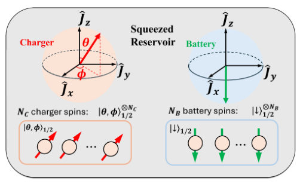
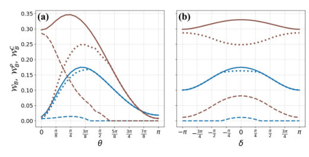
Summary. This paper proposes a method to enhance and stabilize the energy storage capacity of quantum batteries by utilizing both initial charger coherence and reservoir squeezing. It identifies a synergy between these two coherence sources that boosts charging power and uses dark states to protect extractable work from environmental decay. The findings suggest a practical pathway for high-power, stable energy storage in quantum architectures.
Why it may be interesting. It provides a novel mechanism for stabilizing quantum resources using reservoir engineering and dark-state protection, which is highly relevant to open quantum systems and quantum thermodynamics.
Main problem. How to overcome the dissipation of ergotropy and coherence in quantum batteries caused by environmental coupling, while simultaneously accelerating charging power.
Main result. The study demonstrates that combining internal charger coherence with external reservoir squeezing synergistically enhances transient charging power and that initial charger coherence enables steady-state ergotropy stabilization via dark-state protection.
Method. Analytical and numerical analysis using a Lindblad master equation, Dicke basis expansion, and biorthogonal formalism to examine ergotropy decomposition and time-resolved dynamics.
Model / system. A quantum battery and charger system composed of spin ensembles (Dicke sectors) interacting via a shared squeezed vacuum reservoir.
Key observables. Total ergotropy (split into population-driven and coherence-driven components), battery energy, charging power, local battery coherence, and logarithmic negativity.
Important parameters / regimes. Charger polar angle (theta), reservoir squeezing parameter (r), relative phase (delta), and system size (N).
Assumptions / limitations. The evolution is cyclic; the reservoir is modeled using the Born-Markov approximation; the study focuses on the regime where charger and battery sizes are comparable.
Figures summary. Figure 2 shows ergotropy dependence on charger angle and relative phase; Figure 3 shows scaling of energy and ergotropy; Figure 5 illustrates the time evolution of ergotropy components and coherence under different squeezing protocols.
Paper structure. The paper introduces the problem of dissipation in quantum batteries, defines the dual-channel coherence framework, analyzes the single-spin and multi-spin dynamics, explores the synergy between internal and external coherence, and proposes a resource-efficient finite-time squeezing protocol.
Quantum batteries utilize nonclassical resources to achieve charging speed and energy storage performances that surpass classical thermodynamic limits. However, the practical realization of quantum batteries is often constrained by the inevitable environment-induced dissipation of both stored ergotropy and coherence. To actively counteract these losses, we propose a dual-channel coherence framework that exploits dark-state protection to stabilize ergotropy. We conduct, for the first time, an investigation of the synergistic interplay between internal charger coherence and reservoir squeezing, the latter acting as a source of external coherence. In the resource-efficient regime where charger and battery sizes are comparable, our study shows that internal charger coherence and reservoir squeezing jointly enhance the transient charging power. Crucially, initial charger coherence is the fundamental resource for maximizing and stabilizing steady-state ergotropy through dark-state protection. Our analysis reveals that these advantages are driven by the buildup of local battery coherence, which emerges from the integration of both internal and external coherence sources. These results offer a robust pathway for high-power, stabilized energy storage in quantum architectures.
Authors: Rohith Srikanth, Sashank Kaushik Sridhar, Avik Dutt
Type: experiment · Category: other · PDF: https://arxiv.org/pdf/2605.18272v1
Analysis basis: full PDF text, analyzed in chunks
Topic relevance: 🔥 quantum optics experiment 4/5 · analog quantum simulation 3/5 · correlated / nonlocal dissipation 2/5 · driven-dissipative phase transition 2/5 · non-equilibrium dynamics 2/5 · quantum measurements 2/5
Summary. The paper presents a new spectroscopic technique to directly observe and map the energy-resolved eigenmodes of non-Hermitian skin effects in 1D and 2D synthetic frequency lattices. By using a fiber ring resonator, the authors successfully demonstrate boundary-induced mode localization and tunable directional transport in higher dimensions. This establishes a powerful platform for studying non-Hermitian physics and engineering complex Hamiltonians.
Why it may be interesting. This work is highly relevant to quantum optics and open quantum systems as it provides a direct experimental probe for characterizing the eigenmodes of non-Hermitian Hamiltonians and demonstrates a flexible platform for engineering complex synthetic dimensions.
Main problem. Direct, energy-resolved access to the eigenmodes of non-Hermitian lattices has been limited, making it difficult to characterize the spatial profile and energy-dependent displacement of skin modes.
Main result. The authors demonstrated energy-resolved spectroscopy of skin modes in 1D and 2D frequency synthetic lattices, revealing boundary-localized states and tunable directional transport in 2D.
Method. The researchers used an electro-optically modulated fiber ring resonator to create synthetic dimensions, employing laser detuning as a spectroscopic axis and a cascaded heterodyne scheme for site-resolved measurements.
Model / system. An electro-optically modulated fiber ring resonator acting as a synthetic frequency lattice, implementing the non-Hermitian Hatano-Nelson model with engineered frequency-domain boundaries.
Key observables. Complex energy spectrum, spatial mode profiles (site occupation), and band structures in both k-space and lattice space.
Important parameters / regimes. Coupling strengths (C, Delta), phase difference (phi), frequency-domain boundaries (frequency mirrors), and the ratio of loss per hop to hopping strength.
Assumptions / limitations. The system operates in a weakly confining frequency cavity regime; spatial profiles are normalized using an exponential envelope to account for uniform lattice loss.
Figures summary. Fig 1 shows the experimental setup and frequency boundaries; Fig 2 displays measured non-Hermitian bands and comparison with simulations; Fig 3 demonstrates 1D NHSE verification and eigenmode profiles; Fig 4 illustrates the construction and transport properties of 2D lattices.
Paper structure. The paper introduces the experimental platform and boundary engineering, moves to the 1D demonstration of energy-resolved spectroscopy and NHSE verification, and concludes with the extension to 2D frequency lattices and tunable transport.
Non-Hermitian lattices can host the non-Hermitian skin effect, a boundary-induced collapse of all bulk eigenstates into exponentially localized edge modes. This effect underlies anomalous bulk-boundary correspondence and remarkable enhancements in non-Hermitian sensing, yet direct energy-resolved access to the eigenmodes of non-Hermitian lattices has remained limited. Here we report band- and energy-resolved eigenmode spectroscopy of skin modes in a frequency synthetic dimension. By introducing strong frequency-domain boundaries in an electro-optically modulated ring resonator, we realize finite non-Hermitian lattices and use laser detuning as a spectroscopic axis for the eigenenergies of the effective Hamiltonian. Site-resolved heterodyne measurements then reconstruct the spatial profile of each mode, revealing boundary-localized skin states throughout the spectrum and their eigenenergy-dependent displacement from the edge. Beyond 1D, the same frequency-boundary architecture, upon incorporating long-range couplings between finite lattices, produces genuine 2D frequency lattices rather than the hitherto-realized folded 1D systems on twisted tubes. In these lattices we observe tunable directional transport and edge localization in two synthetic dimensions. Our results introduce eigenmode spectroscopy as a direct probe of non-Hermitian physics and establish strongly bounded frequency lattices as a flexible platform for Hamiltonian engineering.
Authors: Pratik J. Barge, Qian Cao, Niklas Hörnedal, Aurélia Chenu, Kater W. Murch
Type: both · Category: quantum information and computing · PDF: https://arxiv.org/pdf/2605.16559v1
Analysis basis: full PDF text, analyzed in chunks
Topic relevance: 🔥 QC/QI experiment 4/5 · 🔥 quantum measurements 4/5 · quantum optics experiment 3/5 · correlated / nonlocal dissipation 2/5 · non-equilibrium dynamics 2/5
Summary. This paper reports the experimental measurement of both the real and imaginary components of the complex Berry phase using a superconducting transmon circuit. It demonstrates that the imaginary part can be used to implement non-unitary quantum gates that selectively amplify or attenuate quantum states. The findings provide a clear distinction between the two components and confirm the unique adiabatic behavior of non-Hermitian systems.
Why it may be interesting. This work is highly relevant for researchers in open quantum systems and quantum optics as it provides a concrete experimental realization of complex geometric phases and demonstrates how dissipation can be harnessed for non-unitary quantum control and geometric filtering.
Main problem. The measurement and control of the complex Berry phase in non-Hermitian quantum systems, specifically distinguishing between its real and imaginary components and utilizing the imaginary part for non-unitary quantum control.
Main result. The researchers experimentally demonstrated that the Berry phase in non-Hermitian systems is complex-valued, where the real part acts as a phase shift and the imaginary part enables state-dependent amplification or attenuation, even implementing a non-unitary geometric gate.
Method. The study uses an interferometric protocol with two loops (C+ and C-) and a pi-pulse to cancel dynamical phases for the real part, and measures changes in state norm (survival probability) to isolate the imaginary part, all implemented on a superconducting circuit.
Model / system. A superconducting transmon circuit with engineered dissipation, modeled by an effective non-Hermitian Hamiltonian in a three-level manifold where post-selection on no-jump trajectories creates non-Hermitian dynamics.
Key observables. Real and imaginary components of the Berry phase, expectation values of Sx and Sy, survival probability, population redistribution, and the time-dependent z-component of the state.
Important parameters / regimes. Detuning (Delta), drive amplitude (J), decay rate (Gamma), loop duration (T), and the proximity to the Exceptional Point (EP).
Assumptions / limitations. The system relies on the validity of post-selection to maintain the non-Hermitian effective Hamiltonian and assumes the adiabatic limit can be approached via shortcuts to adiabaticity.
Figures summary. Fig 1 shows the experimental setup and parameter space loops; Fig 2 presents tomographic measurements of the real phase; Fig 5 illustrates the input-output relation for the non-unitary geometric gate; Fig 6 shows the tuning of the imaginary phase; Fig 8 compares experimental z-component evolution with theory.
Paper structure. The paper introduces the non-Hermitian Berry phase problem, describes the superconducting platform and Hamiltonian, details the measurement protocols for real and imaginary parts, demonstrates non-unitary gate implementation, analyzes the breakdown of adiabaticity, and concludes with the relationship between the imaginary phase and state tracking.
The Berry phase is a geometric phase acquired during adiabatic evolution over a closed loop in parameter space. It plays an essential role in geometric quantum gates and other phase-based protocols. In non-Hermitian systems, the Berry phase is complex, introducing fundamentally new geometric effects, including state amplification. In this work, we report experimental measurement of both the real and imaginary components of a Berry phase in a fully quantum system using a superconducting transmon circuit with engineered dissipation. We also demonstrate the path-dependent effects of the imaginary part on the dissipation and its utility in the implementation of non-unitary quantum control. These findings establish a clear geometric distinction between the real and imaginary components of the Berry phase and experimentally confirm the unique adiabatic behavior of non-Hermitian quantum systems.
Authors: S. Rajendran, B. Mistri, P. K. Sharma, S. E. Kubatkin, A. V. Danilov, S. Dhomkar, S. E. de Graaf, V. Ranjan
Type: experiment · Category: quantum information and computing · PDF: https://arxiv.org/pdf/2605.18208v1
Analysis basis: full PDF text, analyzed in chunks
Topic relevance: 🔥 QC/QI experiment 4/5 · quantum optics experiment 3/5 · spintronics-quantum-optics interface 3/5 · Tavis-Cummings & cavity-many-emitter 2/5 · non-equilibrium dynamics 2/5
Summary. The paper investigates how spins in Er3+:CaWO4 relax at millikelvin temperatures, discovering that a phonon bottleneck prevents efficient energy transfer to the thermal bath. This effect leads to unique temperature and magnetic field dependencies that are critical to understand for developing stable rare-earth-based quantum technologies.
Why it may be interesting. This work is highly relevant to open quantum systems and quantum optics as it characterizes the fundamental decoherence mechanism (spin-lattice relaxation) and the thermalization bottleneck in rare-earth-doped crystals used for quantum memories and transducers.
Main problem. Investigating the spin-lattice relaxation mechanisms and the phonon bottleneck effect in Er3+:CaWO4 at millikelvin temperatures.
Main result. The study identifies a phonon-bottlenecked relaxation process characterized by a specific temperature dependence and a quadratic magnetic field dependence, which can impact the coherence of rare-earth spin ensembles.
Method. The researchers used a low-mode volume NbN superconducting resonator to detect spin relaxation via a pump-probe and echo inversion recovery sequence at temperatures down to 20 mK.
Model / system. The physical system is an Er3+:CaWO4 crystal (50 ppm Er doping) coupled to a superconducting NbN resonator on a sapphire substrate, operating in the millikelvin regime.
Key observables. Spin-lattice relaxation time (T1), spin-resonator ensemble coupling strength (g_ens), inhomogeneous linewidth (Gamma_inh), and spin temperature.
Important parameters / regimes. Temperatures from 20 mK to 400 mK, magnetic fields up to 800 mT, and spin-to-bath relaxation time of approximately 1.5 s.
Assumptions / limitations. The analysis assumes the relaxation is driven by energy exchange via spin flip-flops and that the observed slow component represents the direct-phonon process.
Figures summary. Figure 1 shows the measurement setup and pulse sequences; Figure 2/3 illustrates the decay of the transmitted field and the magnetic field dependence of relaxation; Supplemental figures show temperature dependence and the origin of different time constants.
Paper structure. The paper introduces the experimental setup and the problem of spin relaxation, details the measurement techniques (pump-probe and echo inversion), presents the results regarding the phonon bottleneck and magnetic field dependence, and concludes with an analysis of the different relaxation time constants.
We study spin-lattice relaxation times of electron spins in Er$^{3+}$:CaWO$_4$ at millikelvin temperature, detected via their coupling to a low-mode volume superconducting resonator. At large magnetic field supporting strong phonon-emission rates, we observe a noticeable increase in relaxation times with increasing spin-excitations, which exhibit a unique $[\tanh (\hbar ω_0/k_\text{B} T)]^2$ temperature dependence. These observations are typical of a phonon-bottlenecked spin relaxation, and have implications for quantum technologies that exploit rare-earth spin ensembles as coherent resources.
Authors: Pitambar Bagui, Bijay Kumar Agarwalla
Type: theory · Category: statistical mechanics · PDF: https://arxiv.org/pdf/2605.17908v1
Analysis basis: full PDF text, analyzed in chunks
Topic relevance: 🔥 non-equilibrium dynamics 4/5 · entanglement & information structure 3/5 · methods for driven-dissipative 3/5 · correlated / nonlocal dissipation 2/5 · scars & prethermalization 2/5
Summary. This paper shows that the Quantum Mpemba effect can be realized for physical observables by selectively removing the slowest decaying modes from an operator. This process can lead to an exponential speed-up in relaxation, even though the transformed operator starts further from the steady state. The effect is shown to be robust across various systems, including spin chains and bosonic lattices.
Why it may be interesting. It extends a well-known phenomenon of state relaxation to the level of observables, providing a new framework for controlling the relaxation of physical quantities in open quantum systems and many-body dynamics.
Main problem. Investigating whether the Quantum Mpemba effect (anomalous accelerated relaxation) can occur at the level of physical operators (observables) rather than just quantum states.
Main result. The authors demonstrate that a 'mode-bypassing' procedure can induce a genuine Mpemba effect for operators, where a transformed operator relaxes faster to the steady state despite starting at a larger initial distance.
Method. The study uses a mode-bypassing protocol to remove the slowest decay modes (SDM) from an operator and employs the 'dressed distance' (a trace distance under the Petz recovery map) to quantify relaxation in non-trace-preserving adjoint dynamics.
Model / system. The framework is applied to open quantum systems described by the GKSL master equation, specifically including a single-qubit system, a non-equilibrium XX-spin chain, and a one-dimensional bosonic lattice subject to dephasing.
Key observables. Dressed distance (Ddd), expectation values of local and non-local operators (e.g., population imbalance, bond current, and string operators), and Pauli string decomposition coefficients.
Important parameters / regimes. Dephasing strength (gamma), tunneling amplitude (J), temperature (T), and chemical potential gradients.
Assumptions / limitations. The dynamics are assumed to be Markovian and described by the GKSL master equation under standard Born-Markov and secular approximations.
Figures summary. Figures illustrate the occurrence of the Mpemba effect via distance crossing in a single qubit, the relaxation of local and non-local operators in spin chains, and the numerical validation of theoretical bounds for the change in distance.
Paper structure. The paper introduces the operator Mpemba effect, develops the mode-bypassing mathematical framework and distance measures, demonstrates the effect in single-qubit and spin-chain models, extends the analysis to bosonic lattices, discusses the implications for operator locality, and provides experimental measurement protocols.
The quantum Mpemba effect concerns with anomalous relaxation of quantum states that evolves either under unitary or non-unitary dynamics. In the context of open quantum systems, while most studies focus on quantum states evolving under completely positive trace-presing dynamics described by the Gorini-Kossakowski-Sudarshan-Lindblad (GKSL) master equation, we demonstrate that an analogous effect can arise at the level of operators. In particular, we show that operators that evolves under the adjoint Liouvillian -- despite not being a trace-preserving map -- can still exhibit a genuine Mpemba effect. We derive general conditions under which this phenomenon can occur and validate our predictions for three different open quantum setups. Our results broaden the scope of the Mpemba effect in quantum systems and provide a framework for controlling the relaxation of physically relevant observables.
Authors: Wen Zhao, Xiao Liu, Yunxiao Zhang, Xueshi Guo, Xiaoying Li
Type: both · Category: quantum information and computing · PDF: https://arxiv.org/pdf/2605.17798v1
Analysis basis: full PDF text, analyzed in chunks
Topic relevance: 🔥 QC/QI experiment 4/5 · 🔥 quantum optics experiment 4/5 · interference shaping light 3/5 · quantum measurements 2/5
Summary. The paper demonstrates a method to generate large-scale multi-mode quantum states using ultra-short pulses in an unbalanced SU(1,1) interferometer. By using a mode-locked laser, the researchers overcome the temporal limitations of continuous-wave pumps, achieving significant intensity squeezing across many modes. This approach opens the door to much larger quantum state scales for quantum information processing.
Why it may be interesting. This work is highly relevant to quantum optics and quantum information as it provides a path toward generating ultra-large-scale, high-bandwidth continuous variable cluster states using pulsed light, which is essential for scalable quantum computing and networks.
Main problem. The challenge of scaling up continuous variable quantum states by increasing the number of temporal modes, which is currently limited by the long duration of modes generated by continuous-wave laser pumps.
Main result. Demonstration of multi-mode intensity squeezing in a train of 10 ps ultra-short pulses using an unbalanced SU(1,1) interferometer, achieving intensity noise lower than the shot noise level by ~0.9 dB for M > 10.
Method. The researchers use an unbalanced SU(1,1) interferometer (USUI) with a mode-locked laser pump, employing pulse-resolved joint measurements and a covariance matrix formalism to characterize the correlation structure.
Model / system. An unbalanced SU(1,1) interferometer (USUI) consisting of two fiber-based optical parametric amplifiers (OPAs) in dispersion-shifted fibers, connected by an optical delay line that introduces a delay matching the pump repetition period.
Key observables. Second-order intensity correlation function g(2)(p, q), multi-mode intensity noise (intensity squeezing) relative to the shot noise level, and power gain of the OPAs.
Important parameters / regimes. Pulse duration (~10 ps), repetition period (20 ns), number of modes (M), OPA power gain (mu), and phase difference (theta).
Assumptions / limitations. The system is treated within the Gaussian quantum state regime, and the high-gain regime (mu >> 1) is used for analytical scaling laws; Raman noise is suppressed via liquid nitrogen immersion.
Figures summary. Figure 1 shows the USUI setup and the multi-mode correlation structure; Figure 5 displays intensity noise versus gain and mode number; Appendix figures show the experimental setup details and calibration of the detection system.
Paper structure. The paper introduces the problem of scaling CV states, describes the USUI experimental platform and nonlinear process, presents the theoretical derivation of correlation structures and scaling laws, demonstrates experimental verification of multi-mode squeezing, and discusses future scalability.
The continuous variable quantum state generated by time-domain multiplexed optical parametric amplifier (OPA) is attractive because of the potential of enlarging the mode scale. Currently, the duration of temporal mode is longer than 100 ns since the OPA is pumped by the continuous wave laser, which restricts the scale of quantum state. Here we demonstrate multi-mode intensity squeezing localized in a train of short pulses with duration of $\sim10$ ps by using an unbalanced SU(1,1) interferometer (USUI), where the mode-locked laser is exploited as the pump and the time-domain multiplexing is realized by the combination of optical delay and nonlinear beam splitter. Using the pulse resolved joint measurements, we reveal the correlation structure of the state is unique and fundamentally different from previous approaches. Due to the globe quantum correlation, the intensity squeezing not only depends on the gain of OPAs but also ties to the mode number $M$ of joint measurement. We experimentally perform joint measurement among 30 modes and show the intensity noise lower than shot noise level by $\sim0.9$ dB is achievable for $M>10$. Our investigations open the door for generating ultra-large scale quantum state by pulse pumped USUI.
Authors: Zhe Wang, Yan-Qing Zhu, Xinsheng Tan, Giandomenico Palumbo, Lichang Ji, Wei Xin, Shi-Liang Zhu, Yang Yu
Type: both · Category: quantum information and computing · PDF: https://arxiv.org/pdf/2605.17977v1
Analysis basis: full PDF text, analyzed in chunks
Topic relevance: 🔥 QC/QI experiment 4/5 · 🔥 analog quantum simulation 4/5 · quantum measurements 3/5 · non-equilibrium dynamics 2/5
Summary. This paper reports the experimental observation of 4D tensor singularities and their 3D descendants using a superconducting qubit array. By implementing a specialized hybrid measurement protocol, the authors successfully mapped non-Abelian quantum geometry and demonstrated how high-dimensional topological objects dictate the physics of lower-dimensional systems.
Why it may be interesting. This work is highly relevant for researchers in many-body dynamics and quantum simulation as it demonstrates a robust framework for exploring high-order gauge theories and non-Abelian topology using programmable superconducting circuits.
Main problem. The study aims to probe and characterize high-dimensional 4D tensor singularities and their 3D Euler-class descendants using non-Abelian quantum geometry measurements.
Main result. The researchers experimentally observed a 4D point-like tensor monopole evolving into a nodal ring with a quantized invariant of 2, and demonstrated that 4D singularities reduce to 3D Euler dipoles.
Method. A hybrid analog-digital protocol was used, employing a modified transitionless quantum driving (mTQDA) technique to enhance the signal-to-noise ratio during adiabatic evolution.
Model / system. The platform is a superconducting qubit array consisting of a 2x3 lattice of six transmon qubits with tunable couplers, simulating a 4D minimal Hamiltonian with six bands.
Key observables. Non-Abelian quantum metric, Tensor Berry curvature, 4D Tensor Monopole charge (Q_T), First Euler number (chi_1), and the nodal-ring invariant (nu_T).
Important parameters / regimes. Energy offset (Lambda), excitation densities (n_ex), and hyperspherical coordinates (Omega, gamma, theta, phi).
Assumptions / limitations. The system is protected by chiral and spacetime-inversion symmetries; the analysis assumes the ability to decompose adiabatic evolution into discrete circuit gates.
Figures summary. Figure 1 introduces the 4D model and symmetry protection; Figure 2 compares measured and simulated non-Abelian quantum metrics and shows the topological phase transition; Figure 3 demonstrates the 3D Euler dipole and Berry curvature distribution.
Paper structure. The paper introduces the 4D tensor singularity concept, describes the superconducting circuit implementation and the hybrid measurement protocol, presents the experimental reconstruction of the 4D monopole and its evolution into a nodal ring, and concludes with the dimensional reduction to 3D Euler dipoles.
We report the theoretical prediction and experimental observation of a new class of four-dimensional (4D) tensor singularities and their three-dimensional (3D) Euler-class descendants, protected by chiral and spacetime inversion symmetries on a superconducting circuit platform. The 4D point-like singularity/monopole, characterized by the Dixmier-Douady class of a real bundle gerbe associated with tensor gauge fields, is observed to evolve into a nodal ring carrying an additional first Euler class charge under symmetry-preserving perturbations. Dimensional reduction reveals 3D Euler and Euler curvature dipoles, exhibiting nontrivial Euler topology and a topological sum rule that ensures zero-energy flat bands inherit nontrivial topology even without interactions. Crucially, these high-dimensional degenerate systems are mapped and reconstructed using a hybrid analog-digital protocol designed for non-Abelian quantum geometry measurement within a superconducting qubit array. Our work not only expands the family of topological monopoles but also establishes a robust experimental framework for exploring high-order gauge theory and real-bundle topology across diverse quantum platforms.
Authors: Xin Zhang, Tomaz Prosen, Vladislav Popkov
Type: theory · Category: statistical mechanics · PDF: https://arxiv.org/pdf/2605.17018v1
Analysis basis: full PDF text, analyzed in chunks
Topic relevance: 🔥 methods for driven-dissipative 4/5 · 🔥 non-equilibrium dynamics 4/5 · driven-dissipative phase transition 2/5 · entanglement & information structure 2/5
Summary. The paper provides an exact solution for the steady state of a boundary-driven XYZ quantum circuit. It identifies a new class of robust, chiral, and separable steady states called elliptic spin helices. These states are particularly interesting because they are computationally tractable and potentially easy to implement in experimental settings.
Why it may be interesting. This work provides an exact analytical solution for a non-equilibrium system without U(1) symmetry, identifying robust, experimentally accessible chiral states that could be useful for studying many-body dynamics and open quantum systems.
Main problem. Finding the exact many-body density operator for the nonequilibrium steady state (NESS) of a boundary-driven XYZ quantum circuit, generalizing previous XXZ solutions to the fully anisotropic case.
Main result. The authors derive an exact solution using a spatially inhomogeneous matrix product ansatz and discover a family of robust, separable, chiral steady states known as 'elliptic brickwork spin helices'.
Method. The study employs a two-replica Matrix Product Ansatz (MPA) with an infinite bond dimension, utilizing the algebraic structure of inhomogeneous Lax operators and Jacobi theta functions.
Model / system. A 1D brickwork quantum circuit of N+2 qubits with XYZ-type unitary gates, where boundary qubits are subject to reset quantum channels that project them toward arbitrary pure target states.
Key observables. Local magnetization profiles (x, y, z components), one-point correlations at the boundary, and helix indicators (f1, f2) measuring purity and distance to the helix state.
Important parameters / regimes. Anisotropy parameter (eta), Trotter time step (u), boundary reset parameters (alpha_L, alpha_R), and the modulus of the elliptic theta function (tau).
Assumptions / limitations. The derivation assumes the validity of the proposed matrix product ansatz and relies on the algebraic properties of the Yang-Baxter RLL-type relations.
Figures summary. Figure 1 illustrates the circuit architecture; Figure 5 and 6 show helix indicators (f1, f2) as functions of anisotropy, identifying the presence of pure helices, descendants with kinks, and different chiralities.
Paper structure. The paper introduces the XYZ circuit model, presents the Matrix Product Ansatz solution, describes the discovery of elliptic spin helices, and provides rigorous mathematical proofs in the appendices.
We obtain the exact many-body density operator of a boundary-driven XXZ quantum circuit via a spatially inhomogeneous matrix product Ansatz. The Ansatz has formally infinite bond-dimension and generalizes authors' previous construction \cite{2025XXZcircuit} for the XXZ interactions. The boundary qubits are coupled to reset quantum channels that project them toward arbitrary pure target states. We find and describe a family of relatively robust separable chiral nonequilibrium steady states (NESS), which are elliptic analogs of spin helices for the circuit, and which are particularly attractive from an experimental perspective.
Authors: Yu Guo, Bo-Xuan Wang, Xiao-Min Hu, Yun-Feng Huang, Chuan-Feng Li, Guang-Can Guo, Bi-Heng Liu
Type: experiment · Category: quantum information and computing · PDF: https://arxiv.org/pdf/2605.17418v1
Analysis basis: full PDF text, analyzed in chunks
Topic relevance: 🔥 QC/QI experiment 4/5 · 🔥 entanglement & information structure 4/5 · 🔥 quantum optics experiment 4/5
Summary. This paper reports the first experimental observation of nonadditive quantum communication induced by entropic singularities. By using a photonic setup to combine a qutrit platypus channel and an amplitude damping channel, the authors showed that the joint capacity is greater than the sum of individual capacities. This demonstrates that specific types of noise can be exploited to enhance information transmission.
Why it may be interesting. This is highly relevant to researchers in open quantum systems and quantum optics as it provides experimental evidence for how singular entropy landscapes in noisy channels can be leveraged to enhance quantum communication rates beyond additive limits.
Main problem. The paper investigates the experimental observation of nonadditivity in quantum channel capacity, specifically whether entropic singularities can drive superadditive quantum communication.
Main result. The researchers experimentally demonstrated a violation of additivity by more than 20 standard deviations, showing that the joint coherent information of a qutrit platypus channel and a qubit amplitude damping channel exceeds the sum of their individual capacities.
Method. The study uses a photonic platform to implement the channels, employing quantum state and process tomography on 6-dimensional entangled photon states to measure von Neumann entropies and coherent information.
Model / system. A photonic implementation using a 6-dimensional entanglement source generated via Spontaneous Parametric Down-Conversion (SPDC) in a BBO crystal, implementing a qutrit platypus channel (M3) and a qubit amplitude damping channel (A1/2).
Key observables. Coherent information (Q1), von Neumann entropies of the channel output and environment, and the nonadditivity parameter (Delta).
Important parameters / regimes. Damping parameter gamma = 1/2 for the amplitude damping channel; dimension d=3 for the platypus channel; process fidelities exceeding 0.98.
Assumptions / limitations. The experiment assumes that the reconstructed density matrices from tomography accurately represent the true quantum states and that the purification method correctly captures the environment's entropy.
Figures summary. Figure 1 shows the schematic of the 6D entanglement source, the implementation of the combined M3 and A1/2 channels using optical components, the setup for quantum state tomography, and the encoding strategy for spatial modes.
Paper structure. The paper introduces the problem of nonadditivity, describes the experimental photonic setup and channel implementation, details the tomography and measurement methods, presents the results showing the violation of additivity and the role of entropic singularities, and concludes with the implications of the findings.
The nonadditivity of channel capacity is a defining feature that distinguishes quantum communication from classical communication. In the quantum realm, the channel capacity is determined by coherent information, which is defined through the von Neumann entropies of the output and its environment. Despite its fundamental importance, experimental evidence of such nonadditive quantum communication has been elusive because of the complexity of the required quantum channel. Here, we experimentally observe entropic-singularity-induced coherent-information nonadditivity using the qutrit platypus channel implemented on a photonic platform. By preparing six-dimensional photonic entanglement, we directly measure the coherent information of a platypus channel, a qubit amplitude damping channel, and their joint uses, revealing a clear violation of additivity. Quantum process tomography further reveals the entropic singularity responsible for this effect, demonstrating how singular entropy landscapes in low-dimensional channels can enhance quantum communication beyond additive limits.